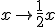

parent nodes: Stationen
Ursprungsgeraden 1
Öffne die Datei Stationen ursprungsgeraden.krv
Zunächst wird die Zuordnung  untersucht.
Der Graph ist eine Ursprungsgerade, die durch den Punkt P(2/1) verläuft.
Gehe zur Karteikarte <Punkte> und schreibe 8 weitere Punkte nach dem Beispiel darunter, die alle auf der Geraden liegen sollen.
Wenn du auf <ZeichneNeu> klickst, sind sie im Schaubild zu sehen. Verbessere gegebenenfalls. Wenn alles richtig ist, schreibe die Punkte in der Form P(2/1),
Q(.../...) in dein Heft ab.
Klicke in der Karteikarte <Aufgabe> auf <weiter>
Nun siehst du eine Urspungsgerade mit dem Term 3*x
Gehe zur Karteikarte <Terme> und verändere den Faktor 3 vor dem x in einen anderen Wert. Die Steigung der Geraden ändert sich und mit Glück verläuft die Gerade durch einen der Punkte.
Beachte, dass auch Brüche als Faktor möglich sind (z. B. 3/7*x). Dann darfst du nicht das Multiplikationszeichen vergessen!
Suche jetzt zu jedem Punkt A, B, C,..., H die Terme auf denen Geraden der Punkt liegt.
Schreibe in dein Heft in der Form:
Sicherung
Erkläre deinem Nachbarn, wie du aus den Koordinaten des Punktes den Faktor vor dem x berechnen kannst.
Extra
Klicke in der Karteikarte <Aufgabe> auf <weiter>
Nun siehst du eine Gerade mit dem Term 3*x+2
Die gleiche Aufgabe, nur soll nach dem x immer noch ein +2 stehen.
Kannst du auch jetzt alle Punkte treffen?
Schreibe in dein Heft in der Form: